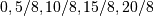
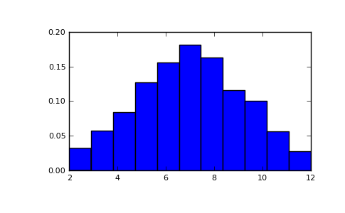

numpy.random.random_integers¶
- numpy.random.random_integers(low, high=None, size=None)¶
Return random integers between low and high, inclusive.
Return random integers from the “discrete uniform” distribution in the closed interval [low, high]. If high is None (the default), then results are from [1, low].
Parameters : low : int
Lowest (signed) integer to be drawn from the distribution (unless high=None, in which case this parameter is the highest such integer).
high : int, optional
If provided, the largest (signed) integer to be drawn from the distribution (see above for behavior if high=None).
size : int or tuple of ints, optional
Output shape. Default is None, in which case a single int is returned.
Returns : out : int or ndarray of ints
size-shaped array of random integers from the appropriate distribution, or a single such random int if size not provided.
See also
- random.randint
- Similar to random_integers, only for the half-open interval [low, high), and 0 is the lowest value if high is omitted.
Notes
To sample from N evenly spaced floating-point numbers between a and b, use:
a + (b - a) * (np.random.random_integers(N) - 1) / (N - 1.)
Examples
>>> np.random.random_integers(5) 4 >>> type(np.random.random_integers(5)) <type 'int'> >>> np.random.random_integers(5, size=(3.,2.)) array([[5, 4], [3, 3], [4, 5]])
Choose five random numbers from the set of five evenly-spaced numbers between 0 and 2.5, inclusive (i.e., from the set ):
>>> 2.5 * (np.random.random_integers(5, size=(5,)) - 1) / 4. array([ 0.625, 1.25 , 0.625, 0.625, 2.5 ])
Roll two six sided dice 1000 times and sum the results:
>>> d1 = np.random.random_integers(1, 6, 1000) >>> d2 = np.random.random_integers(1, 6, 1000) >>> dsums = d1 + d2
Display results as a histogram:
>>> import matplotlib.pyplot as plt >>> count, bins, ignored = plt.hist(dsums, 11, normed=True) >>> plt.show()
(Source code, png, pdf)

{kind=link}